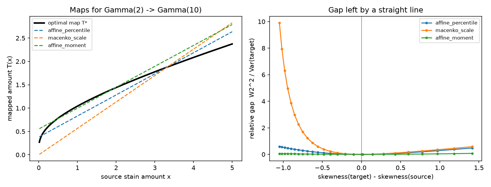
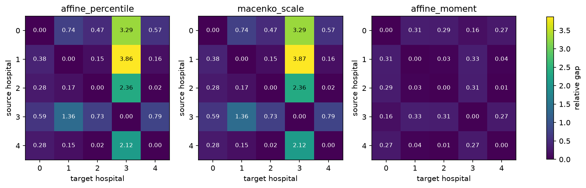

Overview CAMELYON17-WILDS · Hospital 2 test
Test AUC — mean ± std over 3 seeds (best val-AUC epoch)
Test Accuracy — mean ± std over 3 seeds
| Method | Seeds | Best epoch | Val AUC | Test AUC | Test Acc | Runtime |
|---|---|---|---|---|---|---|
| 📊Push training results to see the table. | ||||||
Training curves per method · seed 0
📈Push training results to see curves.
Experiment 1 — Quantile gap affine approximation error
Relative W₂² gap vs skewness difference between source and target

Mean relative gap per method (off-diagonal hospital pairs)

Experiment 2 — Synthetic stain shift RMSE & SSIM vs ground truth
RMSE vs stain-strength factor s (lower is better)
SSIM vs stain-strength factor s (higher is better)
RMSE vs stain-strength factor s (lower is better)
SSIM vs stain-strength factor s (higher is better)
About
Project: Stain Normalisation as Structure-Preserving Optimal Transport in OD Space — CS1503 course project.
Methods compared: No normalisation · Reinhard · Macenko · OT-balanced · OT-unbalanced
Dataset: CAMELYON17-WILDS — 96×96 patches from 5 hospitals. Train: hospitals 0,3,4 · Val: hospital 1 · Test: hospital 2.
Classifier: ResNet-18 trained from scratch, AdamW + cosine LR, mixed precision. Best epoch selected by val AUC.
Code: GitHub →